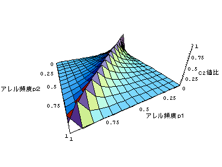
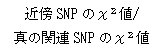
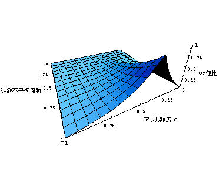

3-3-2-3-3 真のローカスに近接するSNPの、LDの強さとアレル頻度の乖離が検定力に及ぼす影響について
真の疾患関連SNP におけるχ２値とそのSNPと連鎖不平衡関係にあるSNPにおけるχ２値との関係をグラフで示す。
第１のグラフは、真の関連SNPの疾患アレル頻度p2を0.3とした時に、近傍SNPのアレル頻度p1と2
SNP間の連鎖不平衡係数とによって近傍SNPのχ２値がどのように減衰するかを示したグラフである。2 SNPのアレル頻度が等しく、完全連鎖をしている場合に相当する点にピークがあり、そこから全方向に減衰している様子がわかる。
第2のグラフは、固定した連鎖不平衡係数の下で、2 SNPのアレル頻度が変化する場合、どのように減衰するかを示したグラフである。真の関連SNPの疾患アレル頻度と近傍SNPの連鎖しているアレル頻度とが一致している時にχ２値のピークが認められる。また、同時に、同じ連鎖不平衡係数の場合で2
SNPのアレル頻度が等しい場合でも、疾患アレル頻度が中程度の場合をピークに、得られるχ２値が減少することも読み取れる。さらに、疾患アレル頻度が中程度の場合は、2
SNP間のアレル頻度の差が開いても、χ２値の減衰の程度が緩やかであることも読み取れる。
アレル頻度p1 アレル頻度p2 アレル頻度p1 連鎖不平衡係数 (p2＝0.3，D’＝1，χ２値比＝1) 近傍SNPのχ２値/ 真の関連SNPのχ２値



カウンタ